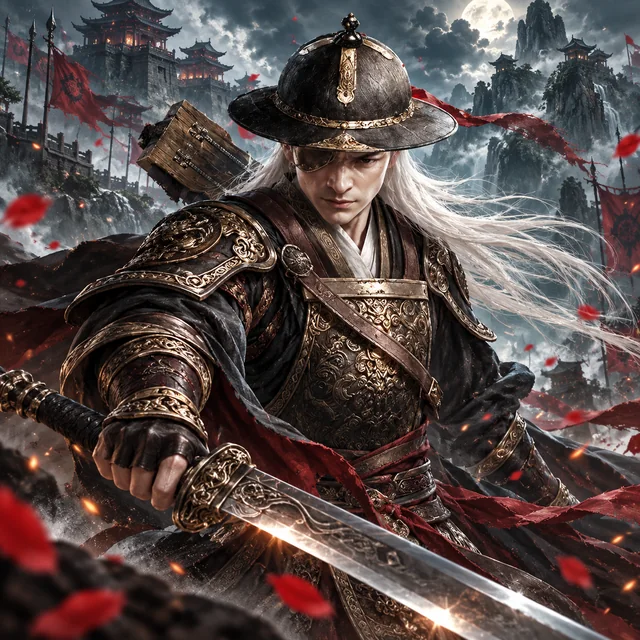
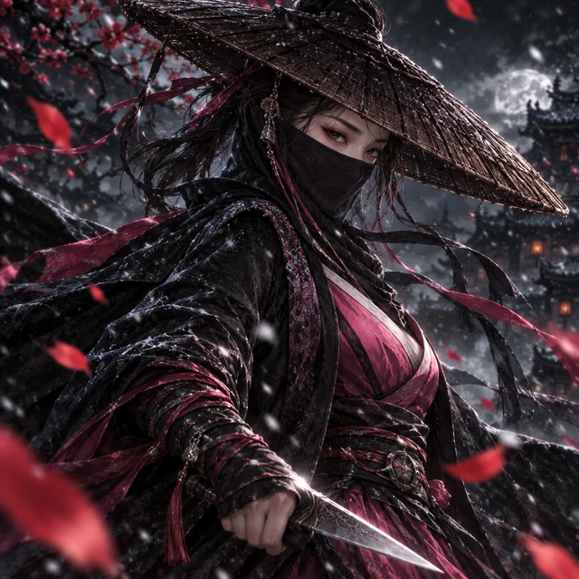
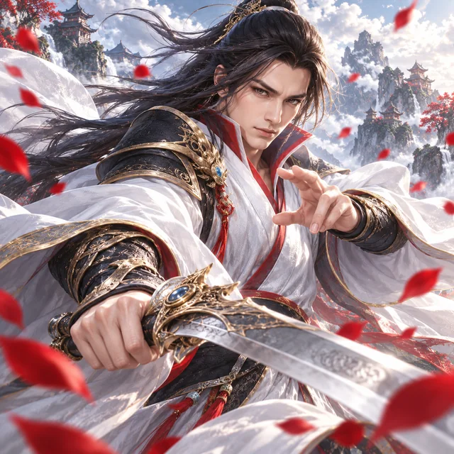
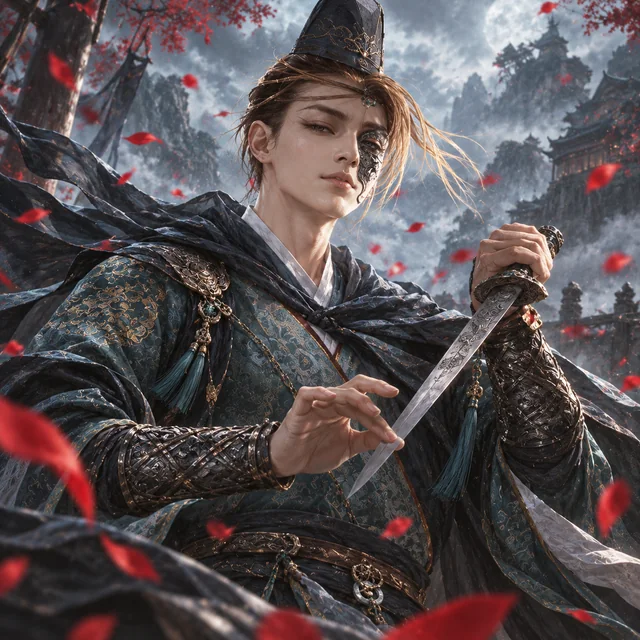
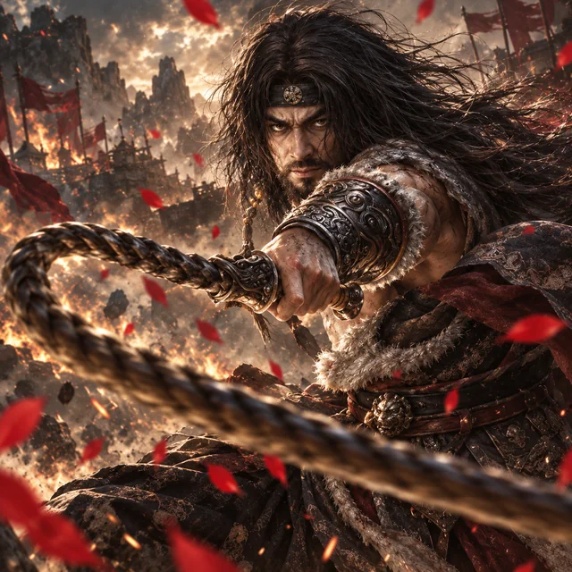
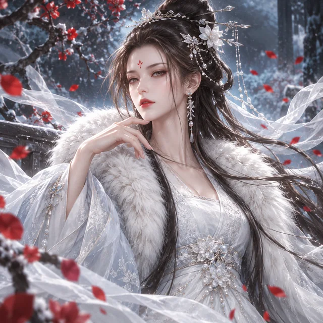
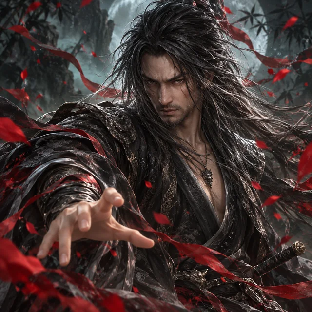
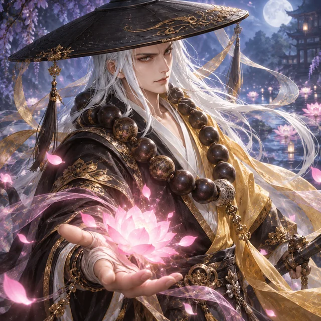
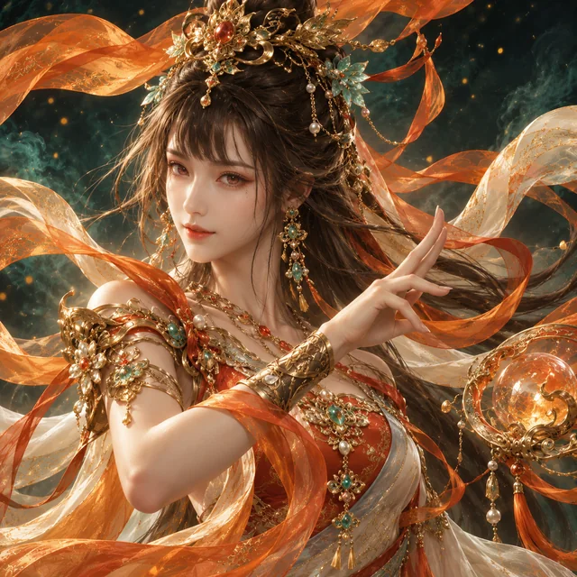

Пути развития
Школы, Фракции, Секты
Три больших направления со своими условиями вступления, особенностями и возможностями.
Школы
Основные направления обучения, требования для вступления и доступные боевые стили.

Лейб-Гвардия
Тан
МингФракции
Особенности репутации, задания и награды за развитие отношений.
 Лазурная Стража
Лазурная Стража
Клан Безродных
Усадьба Зверей
Дворец Цветов
Семья Шень
Храм Небесного КолесаСекты
Условия принятия, уникальные навыки и ограничения особых путей развития.

Остров Сияющих Надежд